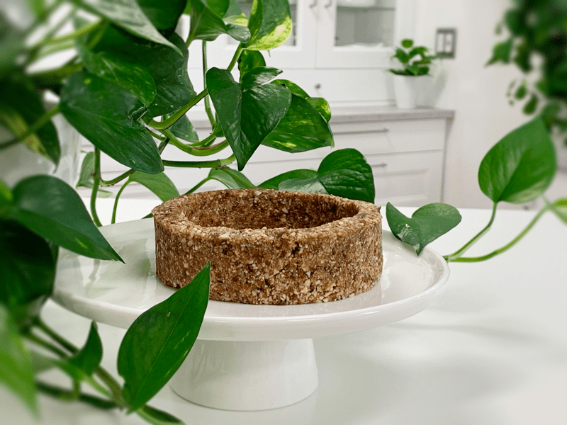

Date Night Almond Crust
– raw, vegan, gluten-free –
This crust recipe is a good ole’ stand by recipe to have committed to memory. You can change it up every time you make it just by switching up the spices. If you change your mind midstream and decide that you don’t need a crust, you can take the batter and roll it into small pop-in-your-mouth balls. These make for great sweet snacks that can be stored in the fridge or freezer for a longer shelf-life.

There are many wonderful recipes that you can create using raw pie crusts. Everything in between sweet and savory. With this recipe or any of the others, you can either make it for an instant dessert creation, or you can store blank crusts in the freezer for future inspiration. Just remove them from the freezer and load up with your favorite fillings. For a few ideas, you could use cheesecake fillings, raw chocolate pudding, blended Young Thai coconut meat, fresh fruit, or even savory ingredients.
Which pan should I use?
There isn’t an answer to this because the possibilities are quite endless. Pie pans, Springform pans, baking pans, tart pans… be creative and start to look outside of the “pan” for ideas.
How do I prepare the pan?
If using a pie pan and plan on serving it straight from there, I would lightly dust the pan with finely ground nuts or oat flour. If you use Springform pans or tart pans, wrap the base with plastic wrap.
Can I substitute any of the ingredients?
I, for one, am not going to stop you. :) But seriously, of course, you can. You can use any nut and/or dried fruit, but before you do, stop and think about the end flavor will be and will it compliment the filling. I always recommend adding the salt because it helps to elevate the flavors.
How to use this recipe:
With this recipe, I can make a flat crust for a 6-8″ pan. The larger the pan, the thinner the crust. Don’t go too thin or it won’t hold up. If you want to go up the sides of the pan, you will need to double the recipe. Or I can make 3 (4″) tart pan crusts. It can be enjoyed instantly or dehydrated.
 Ingredients:
Ingredients:
Yields 1/2 cups crust batter
- 3/4 cup (175 g) Medjool dates, re-hydrated
- 1 1/2 cups (205 g) raw almonds, soaked & dehydrated
- 1/4 tsp (2 g) Himalayan pink salt
- 2 Tbsp (43 g) raw honey or sweetener
Preparation:
- Start by rehydrating the dates.
- To do this, place the dates in a bowl with enough warm water to cover them. Allow them to re-hydrate for 15 minutes. Once done, drain and discard the soak water. Hand-squeeze the excess water from them before adding to the food processor.
- The re-hydrating process helps to soften the dates, so they blend easier and don’t stick to the “S” blades.
- In the food processor, fitted with the “S” blade, process the almonds and salt until the almonds resemble a small crumble.
- The almonds won’t break down to a fine powder due to the oils in the nuts, so be careful that you don’t over-process them and release too much of their oils.
- Always pulse the dry ingredients together after breaking down the nuts. This will ensure even displacement of the spices/seasonings.
- Adding these particular ingredients one step at a time and mixing them with the pulse feature only… will ensure that all the flavors get well mixed and the almonds won’t get over-processed.
- Open the food processor and evenly lay the dates and sweetener around the perimeter of the bowl. Process everything together until the batter sticks together when pinched.
- Press the crust mixture evenly in the bottom of the dessert pan.
- Do you best to make sure the crust is the same thickness throughout, even if you go up the side.
- Double the batter if you want to bring the crust up the sides.
- For more crust techniques, click (Perfecting the Springform Pan and Crusts)
- Crusts also are excellent for creating a “crumble” to top desserts as well.
- The crust can be made 3-4 days in advance for time-saving purposes.
Creating “fast food” kitchen staples:
Freezer option:
- To create a raw food staple, I made three small tart pan crusts and froze them for future use.
- Line the base of the tart pan with plastic wrap.
- Place 1/2 cup of crust batter in the pan and press the crust batter into the bottom and sides of the pan.
- To store for future dessert inspiration:
- Place in the freezer for at least 2+ hours to firm up.
- Once frozen, remove from the pan and lightly wrap the crusts individually with plastic wrap and place in an airtight container in a single layer.
- Freeze for up to 3 months.
- Remove from the freezer and fill with cheesecake batter, raw cacao pudding, blended Young Thai Coconut meat… the possibilities are endless.
Dehydrate option:
- Line the base of the tart pan with plastic wrap.
- Place 1/2 cup of crust batter in the pan and press the crust batter into the bottom and sides of the pan.
- Remove the ring of the tart pan and place the crust on the mesh sheet that comes with the dehydrator, slide the plastic-covered base out from underneath it.
- Dehydrate at 145 degrees (F), then reduce to 115 degrees (F) and continue to dry for 10+ hours.
- My reasoning for starting the crust off at 145 degrees? Click (here) to read why.
- The crust won’t get “Crispy-dry,” so don’t have that expectation.
- Dry times always vary due to humidity, the machine, how full it is, and how oily the nuts got during processing. So please check in on them periodically.
© AmieSue.com